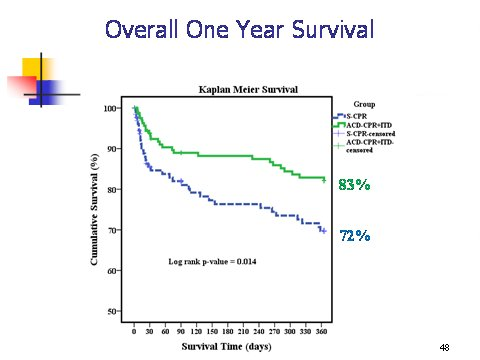
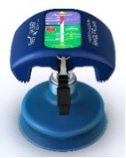
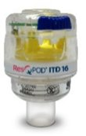
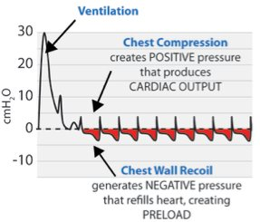
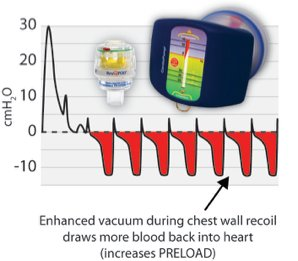
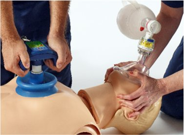

13/03/2015 — Hệ thống ResQCPR được FDA phê duyệt. Thiết bị hỗ trợ hồi sinh tim phổi (CPR) đầu tiên và duy nhất từng được phê duyệt
Bản dịch tiếng Việt của bài "ResQCPR System Approved by FDA. First and only CPR adjunct ever approved." – Dr. Smith’s ECG Blog. Giữ nguyên toàn bộ 6 hình ảnh của bản gốc.
Keith Lurie và các đồng nghiệp đã dành hơn 25 năm nỗ lực cải thiện kết cục của ngừng tim. Tôi quen biết ông ấy. Ông ấy rất thông minh, rất chăm chỉ và có sự chính trực không tì vết. Ông ấy tận tâm với việc cứu sống người bệnh hơn bất kỳ ai tôi biết.
Tôi đã mời Dr. Lurie kể cho chúng ta nghe về thiết bị mà ông đã dày công nghiên cứu bấy lâu nay và cuối cùng đã được FDA phê duyệt.
Tôi không quảng bá bất kỳ sản phẩm thương mại nào trên trang của mình, cũng không đăng quảng cáo nào.
Tôi quảng bá thiết bị này vì nó cứu sống người bệnh, với chức năng thần kinh còn nguyên vẹn.
Chúng tôi đã sử dụng thiết bị ngưỡng hít vào (inspiratory threshold device) trong nhiều năm tại khoa cấp cứu (ED) của chúng tôi và trên khắp Minnesota, nơi chúng tôi có tỷ lệ sống sót sau ngừng tim cao nhất cả nước, theo Sổ đăng ký CARES.
Keith đã phát triển hệ thống này và sáng lập Advanced Circulatory Systems, công ty sản xuất và phân phối thiết bị. Advanced Circulatory Systems gần đây đã được Zoll mua lại.
Ông ấy không còn lợi ích cá nhân nào liên quan đến việc này, nên không còn xung đột lợi ích. Ông ấy chỉ muốn cứu sống người bệnh.
Toàn văn ResQTrial, do NIH tài trợ. Một trong những nghiên cứu y học cấp cứu xuất sắc do NIH tài trợ.
Hệ thống ResQCPR
Hệ thống
ResQCPR đã được FDA phê duyệt vào thứ Sáu, ngày 7 tháng Ba năm 2015. Hệ thống
ResQCPR là sự kết hợp giữa ResQPUMP, một thiết bị hồi sinh tim phổi (CPR) ép-giãn chủ động
(ACD) bằng tay
, và ResQPOD, một van ngưỡng trở kháng (ITD). Đây là
thiết bị hỗ trợ CPR đầu tiên và duy nhất từng được FDA phê duyệt để làm tăng
khả năng sống sót sau ngừng tim không do chấn thương. ZOLL Medical là nhà sản xuất thiết bị mới này
(http://www.advancedcirculatory.com/resqcpr-system/).
Hệ thống
ResQCPR được phê duyệt dựa trên dữ liệu lâm sàng từ một thử nghiệm
lâm sàng có tên ResQTRIAL, công bố trên Lancet, cho thấy hệ thống này làm tăng tương đối 49% tỷ lệ sống sót sau 1 năm với chức năng thần kinh còn nguyên vẹn sau ngừng tim so với CPR quy ước ở những bệnh nhân ngừng tim có căn nguyên tim nguyên phát,1 (link toàn văn) và tăng 34% ở tất cả bệnh nhân ngừng tim không do chấn thương, bất kể căn nguyên.2 Đây là một cột mốc quan trọng
trong lịch sử CPR. Nếu được sử dụng rộng rãi, Hệ thống ResQCPR sẽ cứu sống nhiều người.
Sự
kết hợp giữa ResQPUMP và ResQPOD hoạt động bằng cách làm giảm áp lực
trong lồng ngực sau mỗi lần giãn. Áp lực âm trong lồng ngực
này kéo nhiều máu tĩnh mạch
hơn trở về tim từ não và phần còn lại của cơ thể, từ đó
làm tăng sự đổ đầy của tim. Với lần ép tiếp theo,
tuần hoàn đến tim và não cao gần gấp ba lần khi dùng
Hệ thống ResQCPR so với CPR quy ước. Ngoài
ra, ResQPUMP có đồng hồ đo lực và máy đếm nhịp (metronome) giúp hướng dẫn
độ sâu ép, độ cao giãn chủ động và tần số
ép đúng. ResQPOD có đèn báo thời gian giúp hướng dẫn
tần số thông khí đúng. Có thể tìm thêm thông tin chi tiết về Hệ thống
ResQCPR trên trang web của ZOLL (www.zoll.com). Các nghiên cứu ủng hộ chỉ định sử dụng mới của Hệ thống ResQCPR gồm: Aufderheide – Lancet 2011 (http://www.ncbi.nlm.nih.gov/pubmed/21251705)
và Frascone – Resuscitation 2013 (http://www.ncbi.nlm.nih.gov/pubmed/23669489).
Để
tránh mọi hiểu lầm: Hệ thống ResQCPR không chỉ đơn thuần là một phiên bản bằng tay
của thiết bị LUCAS (có hoặc không có ITD). Thiết bị LUCAS
không thực hiện giãn chủ động
ở bất kỳ mức độ đáng kể nào (nó chỉ kéo lên 3 lbs [pound]), mặc dù nó có
giúp đảm bảo thành ngực nảy về hoàn toàn. Hệ thống ResQCPR là thiết bị
duy nhất được FDA phê duyệt cho phép người dùng thực hiện giãn chủ động thành ngực
hoàn toàn (lực kéo lên trung bình ~15 lbs),
nhờ đó giúp làm giảm áp lực trong lồng ngực và giảm áp lực nội sọ (ICP)
sau mỗi lần giãn. Điều này làm tăng tuần hoàn đến
tim và não. Hiện tại, chưa có thiết bị CPR tự động nào có chỉ định
được phê duyệt về cải thiện sống sót như Hệ thống ResQCPR.
Giờ đây khi Hệ thống ResQCPR đã được phê duyệt, các nỗ lực đang được tiến hành để
phát triển một hệ thống tự động tốt hơn, mang lại lợi ích tương tự
Hệ thống ResQCPR.
Một
ngộ nhận khác là Hệ thống ResQCPR đã được đánh giá trong
Nghiên cứu PRIMED của Liên minh Kết cục Hồi sức (Resuscitation Outcomes Consortium – ROC). Thực tế không
phải vậy. Trong nghiên cứu ROC PRIMED,
bệnh nhân chỉ được điều trị bằng CPR bằng tay quy ước. Sau đó họ được
phân ngẫu nhiên dùng ITD giả (sham, hay giả dược) hoặc
ITD thật (có chức năng),
và được CPR 30 giây hoặc 3 phút trước khi phân tích nhịp và
sốc điện. Bài báo ROC PRIMED đầu tiên báo cáo không có khác biệt giữa
thiết bị thật và thiết bị giả,3 cũng như giữa CPR 30 giây và 3 phút.4
Như chúng ta biết, đó là một nghiên cứu phức tạp.
Gần đây hơn, các nhà nghiên cứu ROC đã công bố thêm ba bài báo cho thấy
tần số ép và độ sâu ép dao động trong một khoảng rộng ở
nghiên cứu ROC PRIMED.5,6 Khi tần số và độ sâu nằm ngoài
khoảng khuyến cáo của AHA, tỷ lệ sống sót giảm. Khi
tần số và độ sâu ép nằm trong khoảng khuyến cáo của AHA,
việc sử dụng ITD thật làm tăng hơn 25% số bệnh nhân sống sót với
chức năng não tốt so với ITD giả.7
Nghiên cứu ROC PRIMED và phân tích lại của nó
đã chứng minh việc thực hiện CPR chất lượng cao, đúng tần số và độ sâu, quan trọng
đến mức nào, cũng như việc hướng dẫn người cứu hộ để họ có thể thực hiện CPR chất lượng
cao. (Yannopoulos Circulation 2014:
http://circ.ahajournals.org/content/130/Suppl_2/A9.abstract?sid=aefe5b91-bc4b-4ac4-9415-b0bbc86a2284).
Có thể kết luận một cách hợp lý rằng nên khuyến cáo sử dụng ITD
nếu người cấp cứu có thể theo dõi
chất lượng CPR của mình và dùng các công cụ phản hồi để đảm bảo các lần ép được
thực hiện đúng tần số và độ sâu. Chúng tôi làm điều đó ở Minnesota và
thường dùng thiết bị LUCAS để thực hiện CPR sau khi đội hồi sức nâng cao (ALS) đến. Dựa trên
Sổ đăng ký Ngừng tim nhằm Cải thiện Sống sót
(CARES)(www.mycares.net),
Minnesota dẫn đầu cả nước với tỷ lệ sống sót kèm chức năng thần kinh
tốt cao nhất (13%) trong số các bang có trong cơ sở dữ liệu CARES. Tỷ lệ
sống sót trung bình
kèm chức năng thần kinh tốt trên toàn quốc ở những nơi tham gia
CARES là 8%.
1Aufderheide
TP, Frascone RJ, Wayne MA, và cs. Standard cardiopulmonary
resuscitation versus
active compression-decompression cardiopulmonary resuscitation with
augmentation of negative intrathoracic pressure for out-of-hospital
cardiac arrest: a randomized trial. Lancet 2011;377(9762):301-311. 2Frascone
RJ, Wayne MA, Swor RA, và cs. Treatment of non-traumatic
out-of-hospital cardiac
arrest with active compression decompression cardiopulmonary
resuscitation plus an impedance threshold device. Resuscitation
2013;84:1214-1222. 3Aufderheide TP, Nichol G, Rea TD, và cs. A trial of an impedance threshold device in out-of-hospital
cardiac arrest. N Engl J Med 2011;365(9):798-806. 4Stiell IG, Nichol G, Leroux BG, và cs. Early versus later rhythm analysis in patients with
out-of-hospital cardiac arrest. N Engl J Med 2011;365(9):787-797. 5Idris AH, Guffey D, Aufderheide TP, và cs. Relationship between chest compression rates and
outcomes from cardiac arrest. Circulation 2012;125:3004-3012. 6Stiell IG, Brown SP, Nichol G, và cs. What is the optimal chest compression depth during
out-of-hospital cardiac arrest resuscitation of adult patients? Circulation 2014;130(22):1962-1970. 7Yannopoulos D, Abella B, Duval S, Aufderheide T. The effect of CPR quality: a potential confounder
of CPR clinical trials. Circulation 2014;130:A9.
Đường cong Kaplan Meier về tỷ lệ sống sót với chức năng thần kinh còn nguyên vẹn:


Tờ thông tin về Hệ thống ResQCPR
Hệ thống ResQCPR™: Một hệ thống vì sự sống còn
Vấn đề
Mỗi ngày, ngừng tim đột ngột, nguyên nhân gây tử vong hàng
đầu tại Hoa Kỳ, cướp đi sinh mạng của 1500 người Mỹ. Tỷ lệ
sống sót hiện nay nhìn chung thấp, với dưới 10% bệnh nhân sống sót
sau ngừng tim ngoài bệnh viện. Giờ đây đã có hy vọng mới cho những người bị
ngừng tim.
Giải pháp
Hệ thống ResQCPR™ mới được phê duyệt thực hiện Liệu pháp Điều hòa Áp lực Trong lồng ngực (Intrathoracic Pressure Regulation – IPR)
trong quá trình hồi sức ngừng tim. Liệu pháp IPR điều hòa áp lực trong
lồng ngực để tăng cường tưới máu trong các tình trạng lưu lượng máu thấp, như ngừng
tim và sốc. Trong một thử nghiệm lâm sàng then chốt, việc sử dụng Hệ thống ResQCPR làm tăng
tỷ lệ sống sót sau một năm thêm 49% so với bệnh nhân được CPR quy ước.1,2
Hệ thống ResQCPR là thiết bị CPR duy nhất có chỉ định được phê duyệt để
làm tăng khả năng sống sót.3 Nếu được triển khai rộng rãi,
điều này có thể đồng nghĩa với việc mỗi năm có thêm hàng nghìn người sống sót sau ngừng
tim.
Mô tả sản phẩm
Hệ thống ResQCPR™ là một tổ hợp thiết bị bao gồm cả
ResQPUMPâ
– thiết bị ép-giãn chủ động (ACD-CPR) – và ResQPODâ ITD 16.
Thiết bị ACD-CPR
ResQPUMP là một thiết bị cầm tay, dùng lại được, gồm một giác hút
đặt lên ngực và một tay cầm có đồng hồ đo lực và máy đếm nhịp. Đây
là thiết bị duy nhất được phê duyệt tại Hoa Kỳ cho phép người cấp cứu thực hiện
hồi sinh tim phổi ép-giãn chủ động (ACD-CPR), vốn ép ngực
giống như CPR bằng tay nhưng cho phép người dùng chủ động làm lồng ngực giãn nở trở lại để tạo ra
áp lực âm (hay chân không) giúp đổ đầy tim trở lại (tức là tạo
tiền tải).


ResQPOD ITD 16 là một van ngưỡng trở kháng (ITD) giúp
tăng cường thêm áp lực âm trong lồng ngực bằng cách ngăn luồng khí không cần thiết
tràn vào qua đường thở mở trong lúc thành ngực nảy về chủ động. Thiết bị này dùng một lần
và được lắp vào hệ thống đường thở, giữa dụng cụ hỗ trợ đường thở (ví dụ mặt nạ,
ống nội khí quản) và nguồn thông khí (ví dụ bóng bóp).


Tác động của Hệ thống ResQCPR
Khi dùng cùng nhau, ResQPUMP và
ResQPOD hoạt động hiệp đồng, giúp tăng cường chân không trong lồng ngực khi CPR hiệu quả
hơn so với từng thiết bị riêng lẻ:
Áp lực đường thở trong
hồi sinh tim phổi quy ước:


và hồi sinh tim phổi
với hệ thống ResQCPR:


Tóm tắt nghiên cứu
Hệ thống ResQCPR đã được nghiên cứu
rộng rãi. Các nghiên cứu tiền lâm sàng4 đã được tiến hành và cho thấy
việc dùng van ngưỡng trở kháng (ITD) trong hồi sinh tim phổi ép-giãn chủ động (ACD-CPR):
·
Làm giảm
áp lực nội sọ (ICP), nhờ đó cải thiện áp lực tưới máu não5
·
Làm tăng lưu lượng
máu trong lúc hồi sức lên gần mức bình thường6
·
Cải thiện
tỷ lệ sống sót với chức năng thần kinh còn nguyên vẹn5
Các nghiên cứu lâm sàng đã cho thấy việc dùng
ITD trong ACD-CPR:
·
Làm tăng
tỷ lệ sống sót sau một năm thêm 34% ở những bệnh nhân ngừng tim do nguyên nhân
không chấn thương2
·
Làm tăng
tỷ lệ sống sót sau một năm thêm 49% ở những bệnh nhân ngừng tim do nguyên nhân tim2
·
Tạo ra
huyết áp tâm thu và tâm trương gần mức bình thường7
·
Làm tăng
đáng kể áp lực âm (chân không) trong lồng ngực, cả khi dùng mặt nạ lẫn ống nội khí quản8
Đặc điểm và lợi ích
·
Thiết bị duy nhất có
chỉ định được phê duyệt nhằm tăng khả năng sống sót3
·
Thiết bị duy nhất
cho phép người cứu hộ thực hiện ACD-CPR
·
Hiệu quả về chi phí
·
Nhẹ,
dễ mang theo và gọn
·
Không chứa latex
·
Có thể được áp dụng
nhanh chóng bởi nhân viên hỗ trợ sự sống cơ bản hoặc nâng cao
·
Được thiết kế để
thúc đẩy hồi sức chất lượng cao:
o ResQPOD có đèn định thời, nhằm giúp duy trì
tần số thông khí phù hợp
o ResQPUMP có máy đếm nhịp (metronome), nhằm giúp duy trì
tần số ép phù hợp
o ResQPUMP có đồng hồ đo lực, nhằm hướng dẫn
lực ép và lực kéo lên


Thực hiện ResQCPR: Hướng dẫn tóm tắt9
1. Đánh giá các dấu hiệu
sự sống.
2. Cho người đi lấy máy khử rung tự động bên ngoài (AED).
3. Bắt đầu ép tim kiểu ACD-CPR
càng sớm càng tốt:
A. Đặt ResQPUMP ở giữa hai núm vú
và phía trên mỏm mũi kiếm.
B. Thực hiện ACD-CPR:
Ép: tới độ sâu 2” (5 cm) và ghi nhận
lực cần thiết để đạt độ sâu đó.
Giãn: Kéo lên với lực -10 kg.
Tần số: 80 lần/phút
4. Lắp van ResQPOD
ITD
A. Gắn sớm vào mặt nạ.
Giữ mặt nạ áp kín.
B. Bắt đầu thông khí theo tỷ lệ ép tim/thông khí
phù hợp.
C. Chuyển sang đường thở nâng cao ngay khi vị trí ống
đã được xác nhận và cố định chắc chắn.
D. Dùng đèn để hướng dẫn thông khí.
Không thông khí quá mức.
5. Tháo CẢ HAI
thiết bị khi có mạch trở lại.
Mã số sản phẩm
| Mã sản phẩm (Part #) | Mô tả | Mô tả |
| 12-0825-000 | Hệ thống ResQCPR |
Gồm một thiết bị ACD-CPR ResQPUMP và hai van ResQPOD ITD 16 |
| 12-0823-000 | Thiết bị ACD-CPR ResQPUMP | Bộ phận thay thế |
| 12-0822-000 | ResQPOD ITD 16 | Bộ phận thay thế |
| 12-0586-000 | Cốc hút cho thiết bị ACD-CPR | Bộ phận thay thế |
| 12-0935-000 | Túi đựng ResQCPR |
Được thiết kế để đựng một ResQPUMP, hai ResQPOD và các phụ kiện khác cần thiết để bắt đầu ResQCPR nhanh chóng |
| 12-2116-000 | ManiKIT |
Cho phép điều chỉnh nhiều loại manơcanh hồi sinh tim phổi để huấn luyện ResQCPR |
| 12-2117-000 | ResQTRAINER |
Dụng cụ huấn luyện giúp học các kỹ năng tâm vận động của ACD-CPR |
| 12-0869-000 | Bộ trình diễn ResQCPR (Demo Kit) |
Mô hình trình diễn ResQMAN kèm van ResQPOD ITD |
Phân phối và dịch vụ khách hàng
Hệ thống ResQCPR chỉ được cung cấp độc quyền
qua ZOLL Medical Corporation. Bộ phận Dịch vụ khách hàng sẵn sàng
giải đáp các thắc mắc về đặc điểm và lợi ích của sản phẩm, việc mua lẻ,
giá cả, hoàn tiền, chiết khấu, tình trạng vận chuyển, hoặc các thông tin
khác liên quan đến dịch vụ. Hãy liên hệ với nhân viên Dịch vụ khách hàng của chúng tôi qua điện thoại hoặc
e-mail:
ZOLL
– Chelmsford (Sản phẩm hồi sức)
Thứ Hai – Thứ Sáu; 8:30 sáng đến 7:00 tối, giờ chuẩn miền Đông (Hoa Kỳ)
Điện thoại trực tiếp: 978-421-9440
Số miễn phí: 800-348-9011
Số fax: 978-421-0015
Thư điện tử (E-mail): info@zoll.com
Thư điện tử (Email):
esales@zoll.com
Trang web:
www.zoll.com
Tài liệu tham khảo
1Bệnh nhân ngừng tim do nguyên nhân tim
2Tóm tắt dữ liệu về an toàn và hiệu quả của hệ thống ResQCPR (ResQCPR System Summary of Safety and Effectiveness Data)
được Cục Quản lý Thực phẩm và Dược phẩm Hoa Kỳ (FDA) phê duyệt năm 2015
3Chỉ định sử dụng được FDA phê duyệt:
Hệ thống ResQCPR được dùng như một biện pháp hỗ trợ hồi sinh tim phổi nhằm tăng khả năng
sống sót ở bệnh nhân người lớn bị ngừng tim không do chấn thương.
4Kết quả nghiên cứu tiền lâm sàng không
nhất thiết đại diện cho kết quả nghiên cứu lâm sàng.
5Metzger và cs. Improved cerebral
perfusion pressures and 24-hour neurological survival in a porcine model of
cardiac arrest with ACD-CPR and augmentation of negative intrathoracic
pressure. Crit Care Med 2012;40(6):1851-6.
6Voelckel và cs. Effects of ACD-CPR with the inspiratory
threshold valve in a young porcine model of cardiac arrest. Pediatr Res
2002;51(4):523-7.
7Plaisance
và cs. Inspiratory impedance during ACD-CPR: a randomized evaluation in
patients in cardiac arrest.
8Plaisance
và cs. Use of an inspiratory ITD on a facemask and ET tube to reduce
intrathoracic pressure during the decompression phase of ACD-CPR. Crit Care Med
2005;33(5):990-994.
9Xem
tờ hướng dẫn kèm sản phẩm để biết hướng dẫn sử dụng đầy đủ.
Sử dụng hệ thống ResQCPR
không đúng cách có thể làm cho các động tác ép và giãn lồng ngực
kém hiệu quả, dẫn đến tuần hoàn không tối ưu trong lúc hồi sinh tim phổi
và có thể gây tổn thương nghiêm trọng cho bệnh nhân. Hệ thống
ResQCPR chỉ nên được sử dụng bởi nhân viên đã được huấn luyện về cách
sử dụng. Không nên dùng ResQPUMP ở bệnh nhân mới mở xương ức
gần đây vì việc này có thể gây tổn thương nghiêm trọng. Đặt cốc hút của ResQPUMP
sai vị trí có thể gây tổn thương khung xương sườn
và/hoặc các cơ quan bên trong, và cũng có thể dẫn đến tuần hoàn không tối ưu trong lúc
ACD-CPR.